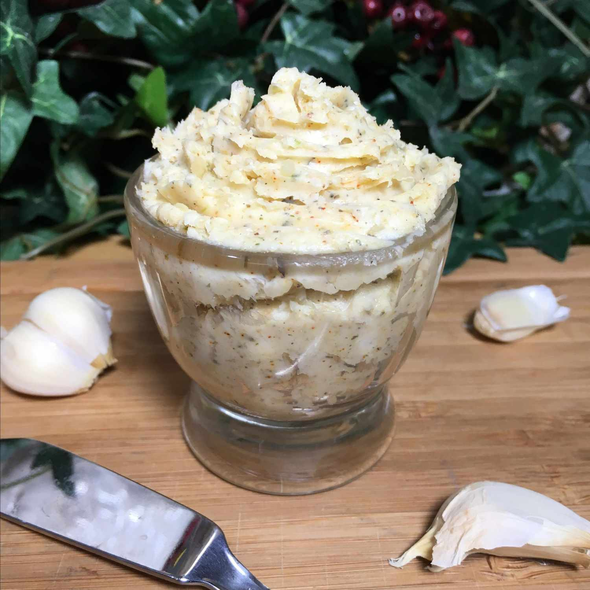

Easy Garlic Butter

This easy garlic butter recipe will be the perfect accoutrement to a delicious homemade bread, accompanying the perfect lasagna, which will get the family excited!
Garlic Butter Ingredients
Heres what will be needed to create this noteworthy garlic butter recipe
- Butter: This recipe starts with two sticks of plain, softened butter.
- Garlic: A tablespoon of fresh, minced garlic.
- cheese: Parmesan cheese takes this garlic butter recipe up a notch.
- Spices: The garlic butter is seasoned with garlic salt, Italian seasoning, black pepper, and paprika.
How to prepare
DIY garlic butter is as easy as mixing it all together and adjusting the seasonings to taste.
- Combine softened butter, Parmesan cheese, and minced garlic in a bowl until well combined. Mix in garlic salt, Italian seasoning, pepper, and paprika until smooth and well combined.
- Taste and adjust the seasonings.